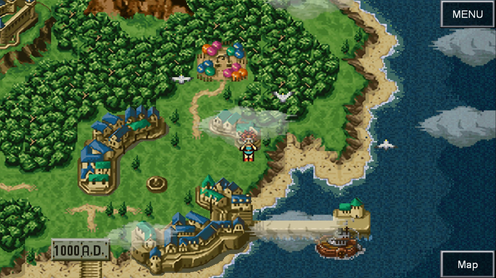
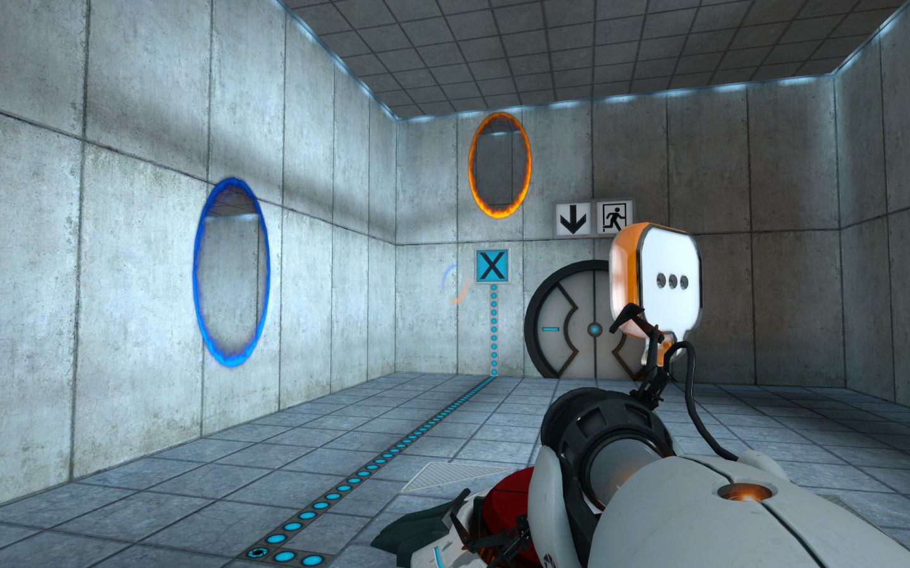
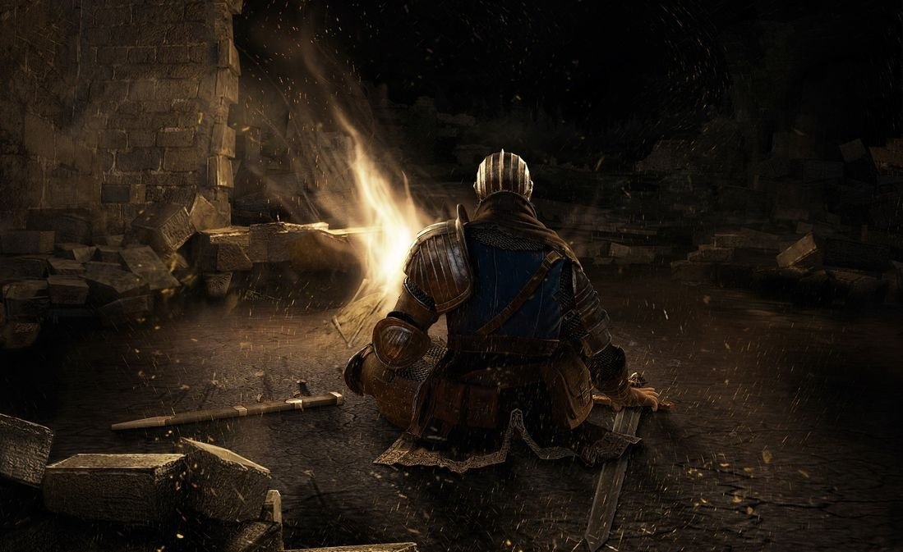
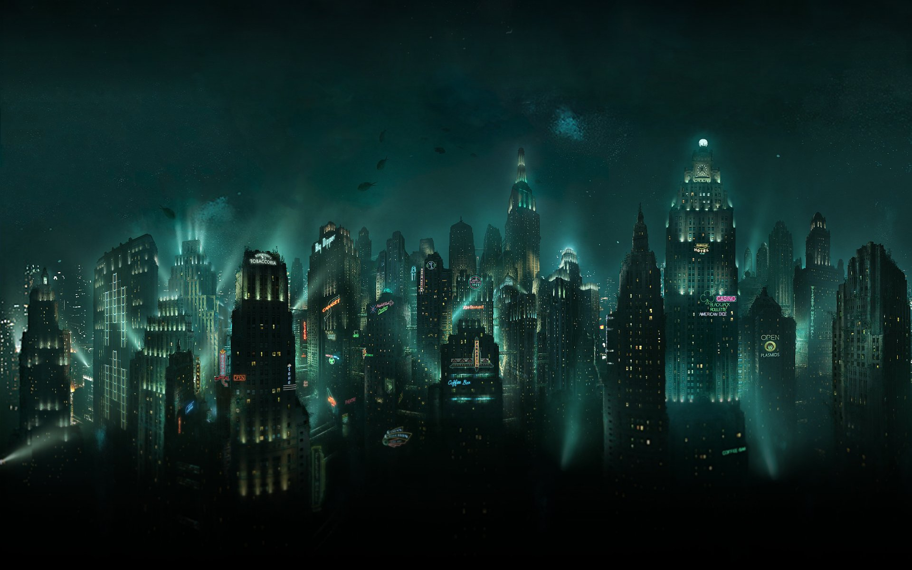
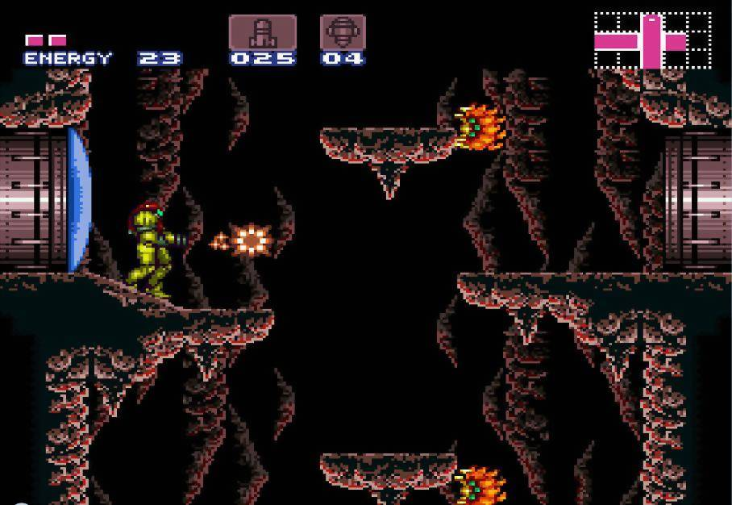
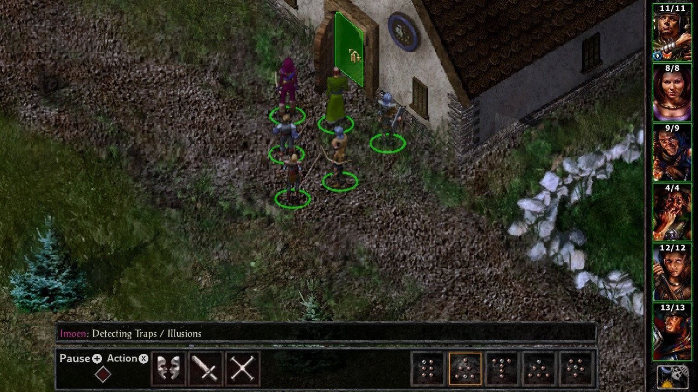
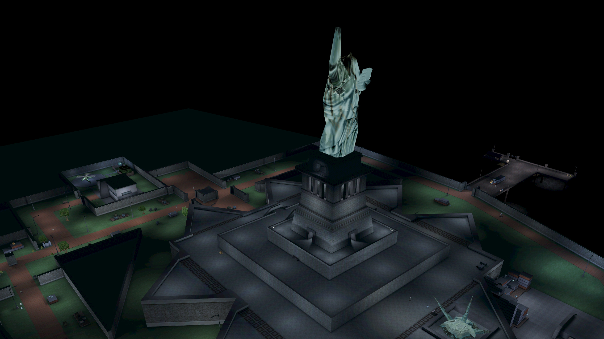

Welcome.
Chrono Trigger (1995)
Journey (2012)
Portal (2007)
Dark Souls (2011)
Bioshock (2007)
Super Metroid (1994)
The Witcher 3 (2015)

Baldur's Gate II (2000)
Deus Ex (2000)
Silent Hill 2 (2002)

[Note: For best user experience please use the desktop version of this website]
Your main source for video games.